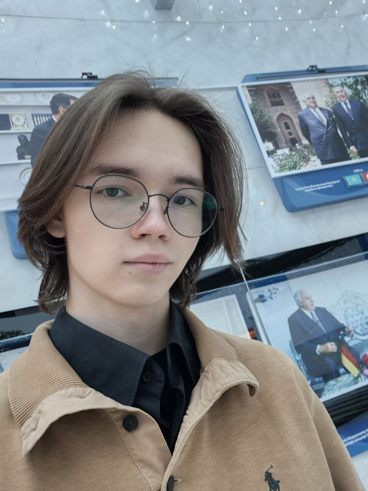
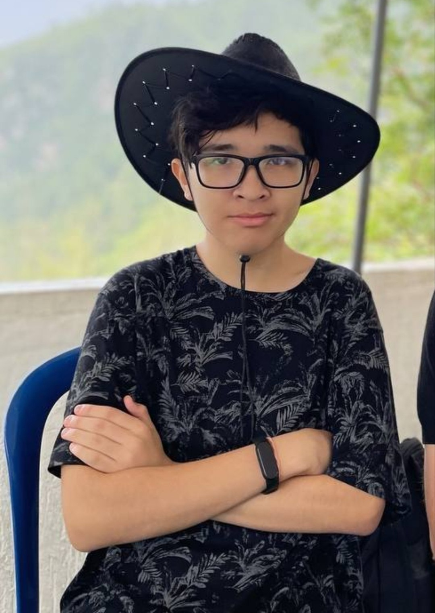
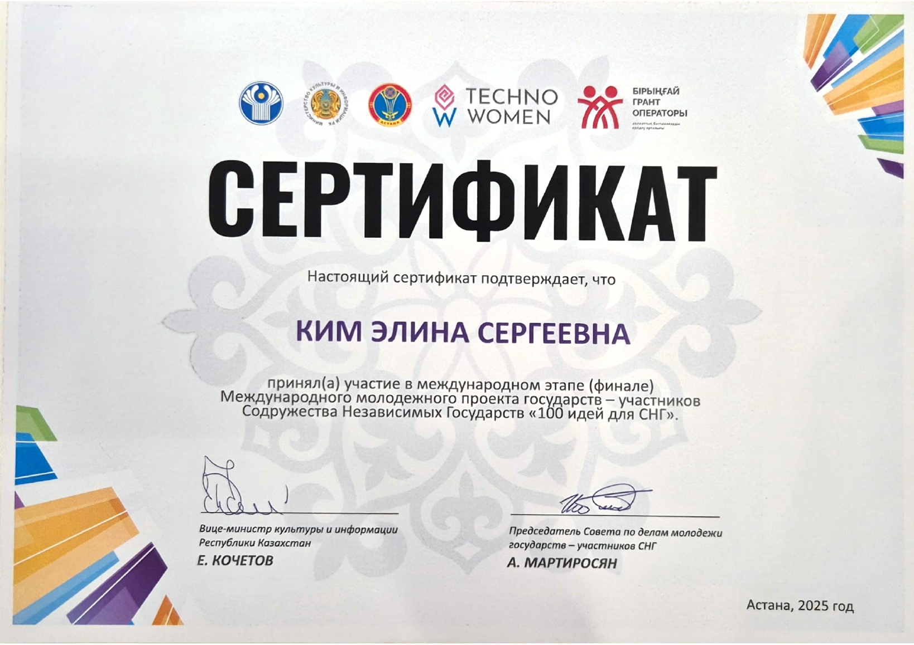
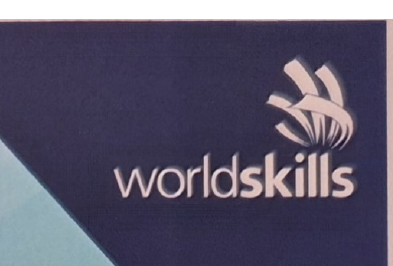

ASTANA · KAZAKHSTANGAMES / COMMUNITY / EDUCATION
Создаём игры.
Выращиваем
индустрию.
SeeVerse Studio — независимая команда из Астаны, которая соединяет разработку собственных игр, образование и кураторство GameDev Center при Astana Hub.
SCROLL TO EXPLORE ↓
02 / OPERATING RESULTS
Не обещания.
Сделанное.
Сводка по внутренним отчётам GameDev Center, событийным материалам Astana Hub и публичным итогам программ. Периоды и единицы сохранены, чтобы показатели можно было читать без маркетинговых обобщений.
ОБРАЗОВАНИЕ120
заявок в Open University
8 занятий · 54 участника
СТАЖИРОВКИ55
участников Trails
7 проектов к публикации · 9 в разработке
GDC GAME JAM97
участников
25 команд · 12 проектов
NU GDC GAME JAM110
команд-участников
40 финалистов · 500 000 ₸
в процессе публикации
и code review
WorldSkills 2025
мероприятиями GDC
Comic Con Astana
Элины Ким
через стажировки
и образовании
EVENT LEDGERКрупные площадки
Крупные площадки
в цифрах
214участников
99команд
34финальных MVP
900K ₸призовой фонд
264участника
124команды
62готовые игры
500K ₸призовой фонд
39спикеров
16выступлений и сессий
12инди-питчингов
8команд-резидентов GDC
производственной практики
WorldSkills Bootcamp
GDC × NU GDC
VR-стажировке
Источники: Canva progress-отчёты команды за 2025–2026 годы; персональное портфолио Элины Ким; итоговые публикации Astana Hub и CIAQ; рабочий реестр событий GameDev Center ↗. Показатели разных программ и накопительные данные разных периодов не суммируются, поскольку аудитории могут пересекаться.
INDIE GAMES · 3D ART · GAME DESIGN · COMMUNITY BUILDING · EDUCATION · EVENTS · INCUBATION · INDIE GAMES · 3D ART · GAME DESIGN · COMMUNITY BUILDING ·
01 / СТУДИЯ
Больше, чем разработка
Мир, в котором
игры становятся
точкой встречи.
История команды началась в 2023 году с Borsyq Games — инди-студии, выросшей из инкубационной программы GameDev Center.
В 2023 году команда проходила инкубацию, тестировала первые игровые и цифровые форматы и выходила на индустриальные площадки. В 2026 году новая глава получила имя SeeVerse Studio: собственная разработка объединилась с кураторством сообщества, стажировками, образовательными программами и масштабными отраслевыми событиями.
2023BORSYQ GAMES2026SEEVERSE STUDIO
Игры
Сюжетные миры, исследование, выразительный визуальный язык и механики, которые служат истории.
Люди
Стажировки, мастер-классы, менторство и реальный производственный опыт для начинающих специалистов.
Экосистема
Джемы, фестивальные зоны, индустриальные связи и площадки для диалога команд, издателей и инвесторов.

IN DEVELOPMENT
PC · 2027
PC · 2027
FLAGSHIP PROJECT / 01
BY YOUR
NAME
Нелинейный психологический триллер о проклятом особняке, пяти потерянных душах и именах, которые почти исчезли вместе с прошлым.
ПлатформаWindows PC
РежимSingle-player
Языки8
Релиз2027
Игрок исследует дом в собственном порядке, находит личные предметы, восстанавливает чужие воспоминания и получает формы с уникальными способностями. Решения в исследовании и пошаговых столкновениях меняют доступные пути к финалу.
BY YOUR NAME / PUBLISHER SNAPSHOTОдна игра.
Одна игра.
Пять форм.
Один план.
Текущая производственная картина и целевой сценарий из издательского питчдека. Финансовые значения ниже — не достигнутые результаты, а план команды.
контента и систем в производстве
участников основной команды
персонажей и наборов способностей
языков запланировано на релиз
ЦЕЛЕВОЙ СЦЕНАРИЙ · НЕ ФАКТИЧЕСКАЯ ВЫРУЧКА
FEB 2027целевой релиз
$8.99базовая цена
20Kкопий за 12 месяцев
до $180Kваловая Steam-выручка до комиссий, скидок и налогов
$35Kинвестиционный запрос
03 / ПРОЕКТЫ И ПРОИЗВОДСТВО
DIGITAL / PUBLISHED / 2026
BARYS
BALA
Двуязычная образовательная игра для детей: четыре типа заданий, озвучка на казахском и русском, персонаж-проводник и система звёзд. В портфолио Элины отмечена как web/digital-проект с продуктовой страницей и айдентикой.
PRODUCTION / CURRENT
ПРОТОТИПЫ,
3D И DIGITAL
Игровые и интерактивные прототипы, 2D/3D-графика, геймдизайн, сценарное проектирование, web-направление и обучение производственным пайплайнам.
UNITYUNREAL ENGINEGAMEMAKERMAYASUBSTANCE 3D
PROJECT ATLAS / 2023—2026
Поле
прототипов.
Собственные игры студии, ранние Borsyq-концепты и проекты стажёров, которые команда сопровождала от идеи до тестирования или публикации.
19 проектов SeeVerse Studio · 2023—2026
By Your Name
Нелинейный психологический триллер, выросший из студенческой джемовской идеи: пять форм, арена 6×6, восемь языков.
PC / STEAM2027
Barys Bala
Билингвальная обучающая игра 4+ для iPhone и iPad. В персональном портфолио Элины — продуктовая web-страница и айдентика проекта.
IOS · FAMILYApp Store ↗
Deadland Drifters
Выживание на автомобилях против зомби: web-версия как первый этап, PC-версия — как расширение.
WEB → PCSURVIVAL
Phantom Photo
Мобильный horror-tour о журналисте, телефоне, который видит призраков, и историях большого города.
MOBILESERPENT'S EYE
Steel Hoof
Мобильный 2D survival roguelike: лошадь сражается с ордами оборотней и усиливается в процедурных забегах.
MOBILEROGUELIKE
SoulPet
Эмоциональный тамагочи и дневник настроения. Четыре ежедневных вопроса влияют на характер и судьбу питомца.
GODOT / ANDROIDПУБЛИКАЦИЯ
Ashline
Раннер об огненном слайме в заброшенной шахте; в команде разработки Шермухаммед как 3D-художник.
UNITY / ANDROIDТЕСТИРОВАНИЕ
Roll a Cat
3D-платформер о коте-шаре, сладких полянах, врагах и восстановлении разрушенной кофейни.
ANDROID3D ARCADE
Pawzzle
Классическая головоломка с передвижными плитками и возрастающей сложностью.
UNITY / ANDROIDПУБЛИКАЦИЯ
Meo Match
Яркая match-3 игра о котиках; куратор и геймдизайнер проекта — Матвей Сеселкин.
UNITY / ANDROIDТЕСТИРОВАНИЕ
Krill Kill
Аркадный экшен-шутер о крошечной креветке с лазерной пушкой.
GAMEMAKER / ANDROIDТЕСТИРОВАНИЕ
Broken
Платформер о выжившем космонавте на Луне; опубликован и продолжает дорабатываться.
GAMEMAKER / ANDROIDОПУБЛИКОВАН
Deep Dive
Проект практики Trails, опубликованный в коллекции GameDev Center.
TRAILSITCH.IO
Link Bots: Escape
Командный проект Trails, опубликованный командой Link Bots.
TRAILSITCH.IO
Bullet Fate
Командный проект Trails, опубликованный на itch.io.
TRAILSITCH.IO
In Oblivion: Redemption v7
Командный проект Trails, опубликованный командой Dev5.
TRAILSITCH.IO
Slash ’n’ Swarm v5.0
Командный проект Trails, опубликованный на itch.io.
TRAILSITCH.IO
Games making Games
Образовательный проект Trails, опубликованный на itch.io.
TRAILSITCH.IO
AstanaVis Bro
Командный хакатонный web-проект, опубликованный на iDos Games. Отдельная джемовская работа команды, не кураторская программа.
WEB / HACKATHONИграть ↗
Ничего не найдено — попробуйте другой запрос или фильтр.
Статусы зафиксированы по рабочим Canva-презентациям команды; они отражают состояние проекта на дату соответствующего отчёта и могут изменяться.
ГАЛЕРЕЯ СТУДИИ / CANVA + ПОРТФОЛИО
Галерея
студии.
Питчдеки, игровые концепты, отчётные слайды, командные снимки и 3D-работы. Нажмите на любой кадр, чтобы рассмотреть его крупнее.

CURATED BY THE SEEVERSE TEAM
GameDev Center
Astana Hub
Не компания и не закрытый клуб, а открытая точка сборки игровой индустрии: образование, практика, команды, партнёры и возможности.
Команда SeeVerse курирует развитие сообщества, объединяет начинающих и опытных разработчиков, организует игровые джемы, индустриальные зоны и образовательные программы. Центр вырос из CG-среды и инициатив OMNIUM, сохраняя преемственность и передавая знания дальше.
GameDev Center в Instagram ↗Стажировка с работой над играми и Demo Day по итогам интенсивной практики.
Открытые занятия по Unity, Unreal Engine, GameMaker, Maya и Substance Painter.
Global Game Jam, Spark Game Jam и локальные джемы от идеи до рабочего прототипа.
GameDev-зоны на Comic Con, Digital Bridge, GITEX и событиях Creative Industries Alliance.
FROM ENTRY TO RELEASE
Как работает
конвейер роста.
Open University
Первый контакт с профессией: открытые практические занятия, движки, 3D и специализации.
120 заявок → 54 участникаTrails
Команды по 3–5 человек проходят четыре этапа: идея, прототип, разработка, публикация.
4 недели → портфолиоGame Jams
Дедлайн, командная работа, проверка идеи и первый законченный продукт.
от 48 до 168 часовShowcase
Demo Day, Comic Con, Digital Bridge и профильные сцены для тестов, обратной связи и партнёрств.
питч → публикация04 / ЛЮДИ
Команда, которая
строит среду.
01 / LEAD
Элина Ким
Lead Coordinator SeeVerse Studio · Head of GameDev Center Astana Hub · co-founder Borsyq Games
Креативный директор и ведущий разработчик By Your Name, 3D-художник и преподаватель с четырёхлетней практикой в геймдеве. Руководит мобильным, PC и web-направлениями; выпускница Tech Orda. Главный эксперт WorldSkills Astana 2026 и финалист «100 идей для СНГ».

02 / DESIGN
Матвей Сеселкин
Deputy Head GameDev Center · Project Manager & Level Designer, SeeVerse Studio
Левел-дизайнер By Your Name и соавтор геймдизайна. Координирует процессы GameDev Center, тестирует игровые сборки, участвует в презентациях на выставках и профильных форумах.
Портфолио Матвея ↗
03 / 3D ART
Шермухаммед «Шерхан» Рахметов
3D Artist · Game Developer · Game Designer
Специалист по 3D-моделированию и игровым ассетам, участник проектов SeeVerse/Borsyq и наставник GameDev Center. Финалист национального WorldSkills Kazakhstan 2025 с Medallion for Excellence; призёр региональных этапов.
Портфолио Шерхана ↗BY YOUR NAME — PRODUCTION TEAM
Элина Creative Director / Lead Developer
Матвей Level Designer
Мария 2D Artist
Влад Lead Pixel Artist
Асима 2D Artist
Амир Sound Designer
Расул Pixel Artist
05 / МАСШТАБ И ДОСТИЖЕНИЯ
Результат — это
не только релиз.
Это новые команды, рабочие прототипы, связь регионов с индустрией и сцена, на которой казахстанские разработчики становятся заметны.
214участников
Global Game Jam KZ 2026
Global Game Jam KZ 2026
34готовых MVP
за 5 дней
за 5 дней
264участника
Spark Game Jam 2026
Spark Game Jam 2026
62завершённые игры
за 64 часа
за 64 часа

2025Финал международного этапа «100 идей для СНГ»
Проект экосистемы GameDev Center.

2025—2026WorldSkills: экспертность и медали
Элина — независимый, затем главный эксперт. Шермухаммед — серебро Astana 2025 и Medallion for Excellence на национальном этапе.
От Demo Day к национальным событиям
Четыре года последовательной работы: инкубация, Comic Con, Digital Bridge, Global Game Jam, GameDev Fest, Spark и региональные буткемпы.
06 / ХРОНИКА
События,
которые нас связали.
Основание Borsyq Games
Команда оформляет инди-студию в Астане и начинает развивать собственные игровые, mobile, PC и web-направления.
GameDev Center Demo Day
Семь команд презентуют результаты инкубации, получают обратную связь и выходят к профессиональному сообществу.
GameDev-зоны Comic Con Astana
Инди-игры, разработчики и коллаборации с косплей-сообществом на одной площадке.
Borsyq Games в стартап-зоне
Презентация казахстанской игровой студии на крупнейшем технологическом форуме региона.
Global Game Jam в Astana Hub
Открытие, командообразование, рабочая площадка GameDev Center и презентация созданных проектов.
WorldSkills Astana 2025
Элина — независимый эксперт; Шермухаммед получает серебро в 3D-моделировании компьютерных игр.
Координация GameDev-зоны
Площадка для продвижения проектов казахстанских команд и диалога с индустрией.
Международный финал
GameDev Center представлен как развивающаяся экосистема образования, практики и сообщества.
Global Game Jam Kazakhstan
214 участников, 99 команд и пять зарубежных локаций; 34 проекта доходят до финала, призовой фонд — 900 000 ₸.
Два потока производственной практики
Две установочные сессии запускают проектные команды: 18 участников в первом потоке и 33 — во втором, с распределением ролей и реальными производственными задачами.
Серия практикумов по 3D-моделированию
Шермухаммед Рахметов проводит три практических занятия для стажёров: два потока по 10 участников и заключительное занятие для пяти.
Митап и чемпионат по Unmatched
Матвей Сеселкин координирует встречу с клубом NU GDC и настольный турнир для 13 участников.
Семь дней полного 3D-пайплайна
Концепт-арт, hard surface, Substance Painter, риггинг, анимация, UV/retopo, ZBrush и интеграция в Unreal Engine 5 — недельный интенсив для шести участников.
GameDev-зона, плейтесты и питчинг
Команда организует в Qyzgaldaq Saraiy открытую зону с тестированием игр, питчингом проектов и выступлениями профильных спикеров.
Школьная стажировка с Meta Quest 3
Элина Ким и Матвей Сеселкин проводят двухдневную практику для четырёх школьников 8–9 классов по созданию VR-симулятора.
Unity и Autodesk Maya
Практические мастер-классы для начинающих; занятие по Maya ведёт Шермухаммед Рахметов.
Demo Day стажировки
Участники защищают игры, созданные за восемь недель интенсивной практики.
SeeVerse Studio
Новая студийная глава объединяет игровую разработку, обучение, мероприятия и кураторство GameDev Center.
Barys Bala
В портфолио Элины появляется продуктовая web-страница и айдентика двуязычной образовательной игры; приложение выходит в App Store для iPhone и iPad.
64 часа, 62 игры
124 команды, 264 участника и призовой фонд 500 000 ₸ при поддержке MyTona.
GameDev Bootcamp, Петропавловск
Элина и Матвей вместе с партнёрами помогают участникам пройти путь от знакомства с профессиями до первых проектов.
GameDev Tour
Интерактивные экскурсии по Astana Hub, знакомство со стажировками, индустрией и GameDev Center.
GameDev Fest и Digital Qazaqstan
Инди-витрины, профессиональный диалог и участие в повестке креативных индустрий Казахстана.
РАБОТАЛИ В ОДНОЙ ЭКОСИСТЕМЕ
ASTANA HUBCIAQGCAOMNIUMMYTONAOGAMESSHŪ STUDIONU GDCWORLDSKILLSCREATACOLIZEUM
07 / PEOPLE · TEAM · COMMUNITY
Люди
в кадре.
Главный канал этого раздела — Instagram. Здесь не витрина отдельных игр, а команда в работе: организаторы, разработчики, художники, партнёры, участники джемов и посетители индустриальных площадок.
PRIMARY CHANNEL / 08 FULL REELS
Команда — это не список должностей. Это общая практика.
Все ролики встроены полностью и идут одной открытой сеткой — без карусели, скрытых карточек и внутренней прокрутки.
GAMEDEV CENTER · 20.07.2026
После джема: люди, знакомства и общие воспоминания
Команда и участники Boomwichi Game Jam встречаются вне дедлайнов — настольные игры, разговоры и живая среда.
Открыть ролик ↗GAMEDEV CENTER × GCA · 17.07.2026
Лица GameDev Fest: привет от сообщества
Короткий командный портрет фестиваля через участников, организаторов и тех, кто создаёт индустрию рядом.
Открыть ролик ↗GCA × SEEVERSE · 27.08.2026
Команда спрашивает: знаете ли вы казахстанский геймдев?
Разговоры с косплеерами и посетителями Comic Con — про локальные игры, разработчиков и узнаваемость индустрии.
Открыть ролик ↗GCA × GAMEDEV CENTER · 06.08.2026
Авторы встречаются с игроками
GameDev-зона как место личного контакта: протестировать игру, поговорить с создателями и поддержать локальные команды.
Открыть ролик ↗PARTNER VIEW · 08.08.2026
Малика Игибаева: коллаборация геймдева и искусства
Личный взгляд партнёра на общую инди-зону, художников и поддержку казахстанских разработчиков на Comic Con.
Открыть ролик ↗CIAQ · 21.07.2026
Экскурсия по GameDev Fest с Маликой Игибаевой
Соорганизатор и куратор фестиваля показывает людей, сцены и связи между молодыми командами, экспертами и индустрией.
Открыть ролик ↗GCA × SEEVERSE · 07.09.2026
Кто стоит за GameDev-зоной Comic Con
Организаторы, партнёры, косплей-сообщество и команды — общий портрет большой совместной площадки.
Открыть ролик ↗GCA × SEEVERSE · 08.08.2026
Играть, тестировать, говорить с авторами
Посетители Game Zone знакомятся с разработчиками лично, делятся впечатлениями и поддерживают локальную сцену.
Открыть ролик ↗ДАЛЬШЕ — КОНТЕКСТ
Смотреть. Слушать. Читать.
Большой разговор
EL.KZ · VIDEO INTERVIEW
Как джемовская идея выросла в By Your Name
Элина Ким — о пяти душах, пиксельной графике, инди-команде и дефиците издательской поддержки.
Читать полное интервью ↗Голоса индустрии
HUB TALKS · 63 MIN
Геймдев в Казахстане: работа или искусство?
Лев Тарасов, Владимир Баринов и Амир Айткулов — об образовании, командах и перспективах индустрии.
Слушать ↗ JIBEK JOLY · ВИДЕО + АУДИОГеймдев без границ
Как региональные хабы и креативные инициативы помогают превращать идеи в игровые проекты.
Слушать ↗ ASTANA HUB · DOCUMENTARY CONTEXTЕсть ли геймдев в Казахстане?
Документальный проект студентов AITU и обзор первых студий, сообществ и публичной индустрии.
Открыть ↗Публикации и доказательства
EL.KZ
Элина Ким: от геймджема до собственной игры
Интервью ↗ RATEL.KZSeeVerse и GameDev Center в новой экономике
Материал ↗ THE TECHБольшое интервью о GameDev Center
Читать ↗ THE TECHШермухаммед Рахметов: 3D и WorldSkills
Читать ↗ ASTANA HUBGlobal Game Jam: 34 MVP за пять дней
Итоги ↗ ASTANA HUBSpark Game Jam: 264 участника
Итоги ↗ QZ-MEDIAGameDev Bootcamp в Петропавловске
Репортаж ↗ ASTANA HUBGameDev Tour от SeeVerse Studio
Событие ↗ APP STORE · 2026Barys Bala: двуязычная обучающая игра 4+
Приложение ↗ GOV.KZ · 2026Global Game Jam Kazakhstan: официальный материал
Читать ↗ AIKYN · 2026GameDev Fest и возможности игровой индустрии
Читать ↗ IXBT.KZ · 2026Более 30 игровых MVP за пять дней
Читать ↗ PROFIT.KZ · 2026Профессиональное сообщество GGJ Kazakhstan
Читать ↗Полный проверочный индексЕщё 11 первичных ссылок + документы+
CIAQGGJ 2026: партнёры и результаты ↗
МТРККомментарий Элины о Bootcamp ↗
GCAПрофиль спикера Элины Ким ↗
WORLDSKILLSНациональные результаты 2025 ↗
ASTANA HUBЭкспертный разбор с Матвеем ↗
ITCH.IOОфициальная страница Spark Game Jam ↗
STEAMBy Your Name ↗
IDOS GAMESAstanaVis Bro ↗
PORTFOLIOМатвей Сеселкин ↗
PORTFOLIOШерхан Рахметов ↗
INSTAGRAMGameDev Center ↗
PORTFOLIOЭлина Ким: проекты, опыт и документы ↗
BARYS BALAПродуктовая страница проекта ↗
WORLDSKILLSЭлина Ким — главный эксперт 2026 ↗
Редакционная сверка: 25 октября 2026. Внутренние показатели дополнены рабочими Canva-отчётами; планы и финансовые сценарии на сайте отдельно отмечены как цели.
LET'S BUILD THE NEXT WORLD
Есть игра,
идея или сцена
для коллаборации?
Открыты к партнёрствам, совместным событиям, образовательным программам, издательским диалогам и производственным проектам.
seeverse.studio@gmail.com ↗Instagram ↗ASTANA · KAZAKHSTAN